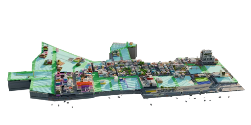

Unit Overview
This unit will explore the development, albeit uneven, of Southern Africa, as well as the organization of major cities within the region. We will look at the urbanization rates in the region and study the African City Model. We will explore the inequalities between rural and urban areas and study the smart growth in Southern African cities.
6.1: Typical structures in Southern Africa
This section explores the typical structures, and methods for building the structures in southern africa, such as mud huts, or large skyscrapers.
6.2: Rapid urbanization
Details the rapid urbanization of southern african cities like Durban or Gaborone, and how rural to urban migration, demand for more urban homes, and even suburbanization play a role in rapid urbanization. This subunit also includes a case study of the African City model.
6.3: Inequality Indexes
Goes into detail on the level of inequality seen in southern african regions, especially between rural and urban areas. This can include mentioning access to everyday amenities, like electricity, access to clean water, and healthcare.
6.4: Environmental Initiatives
This subunit explores environmental decisions taken in the region, and how they have helped improve the environment of southern africa after decades of mishandling. This subunit includes the case study of smart growth in southern african cities.
Instructional Tool - Minecraft Education
Students will use Minecraft Education Edition to design their own Southern African city, incorporating important concepts and details from the course material within the city.
Case Study - African City Model
The African City Model explains the urban structure of African cities by including three central business districts. The model is important in allowing us to better understand the urbanization patterns in post-colonial Southern Africa. However, this model is outdated in the region due to the fact that it oversimplifies urban landscapes and fails to consider informal settlements, diverse economic activities, and changing social structures. Despite this, the model is still important in understanding historical urban development patterns within Southern Africa.